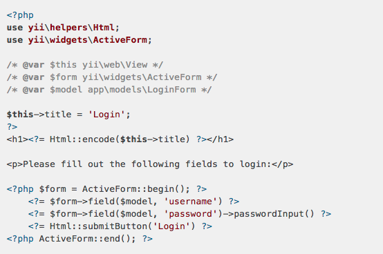

什么是Yii？
Created by 陈琦 [acking]
2016-12-06
PHP
“ PHP is a popular general-purpose scripting language that is especially suited to web development.
Fast, flexible and pragmatic, PHP powers everything from your blog to the most popular websites in the world....... ”
PHP是一种流行的通用脚本语言，特别适合于Web开发。
快速，灵活，务实的，PHP的力量一切从你的博客，是世界上最受欢迎的网站。
Yii
“ The Fast, Secure and Professional PHP Framework
Yii is a high-performance PHP framework best for developing Web 2.0 applications.
Yii comes with rich features: MVC, DAO/ActiveRecord, I18N/L10N, caching, authentication and role-based access control, scaffolding, testing, etc. It can reduce your development time significantly.
”
快速，安全和专业的PHP框架
Yii的是一个高性能的 PHP框架最适合开发Web 2.0应用程序。
Yii的带有丰富的功能：MVC，DAO / ActiveRecord的，国际化/本地化，缓存，认证和基于角色的访问控制，脚手架，测试等。它可以显著减少开发时间。
性能

Yii 是一个高性能框架。上图表显示了与其它流行的 PHP 框架相比 Yii 是如何高效。在图表中，RPS 表示“每秒请求”，它描述了在框架中写入的应用程序每秒可以处理的请求数。数值越大，这个框架的效率就越高。我们可以看到，在此比较中 Yii 胜过所有其它框架。当启用广泛使用的 APC 扩展时，Yii 的性能尤为显著。
单靠性能并不是个完整的故事（否则我们应该使用纯 HTML 或 PHP）。拥有如此优越的性能，Yii 还提供了非常丰富的 功能集，可以大大提高开发效率。
WEB环境的搭建
- 源码安装( nginx,apache,php,mysql )
- 集成环境安装( wampserver,xampp )
快速安装yii2框架
- 通过 Composer 安装
- 获取最新的代码安装
- 安装教程
快速使用yii2框架（ MVC ）
- 控制器Controllers
- 模型Models
- 视图Views
- 模块Modules
控制器Controllers
控制器是 MVC 模式中的一部分， 是继承yii\base\Controller类的对象，负责处理请求和生成响应。 具体来说，控制器从应用主体接管控制后会分析请求数据并传送到模型， 传送模型结果到视图， 最后生成输出响应信息。
namespace app\controllers;
use yii\web\Controller;
class SiteController extends Controller
{
public function actionIndex()
{
return $this->render('index');
}
public function actionHelloWorld()
{
return 'Hello World';
}
}
模型Models
模型是MVC模式中的一部分，是代表业务数据、规则和逻辑的对象。
可通过继承 yii\base\Model 或它的子类定义模型类，基类yii\base\Model支持许多实用的特性：
- 属性: 代表可像普通类属性或数组一样被访问的业务数据;
- 属性标签: 指定属性显示出来的标签;
- 块赋值: 支持一步给许多属性赋值;
- 验证规则: 确保输入数据符合所申明的验证规则;
- 数据导出: 允许模型数据导出为自定义格式的数组。
模型Models-示例
namespace app\models;
use Yii;
/**
* This is the model class for table "user".
*
* @property integer $u_id
* @property string $u_username
* @property string $u_name
* @property string $u_tell
* @property string $u_email
* @property integer $u_email_active
* @property string $u_photo
* @property string $u_region
* @property string $u_job_title
* @property string $u_location
* @property string $u_address
* @property string $u_auth_key
* @property string $u_password_hash
* @property string $u_password_reset_token
* @property integer $u_is_planner
* @property integer $u_is_channel
* @property integer $u_role
* @property integer $u_status
* @property integer $u_created_at
* @property integer $u_updated_at
*/
class User extends \yii\db\ActiveRecord
{
/**
* @inheritdoc
*/
public static function tableName()
{
return 'user';
}
/**
* @inheritdoc
*/
public function rules()
{
return [
[['u_email_active', 'u_is_planner', 'u_is_channel', 'u_role', 'u_status', 'u_created_at', 'u_updated_at'], 'integer'],
[['u_username', 'u_name', 'u_email', 'u_photo', 'u_region', 'u_job_title', 'u_password_hash', 'u_password_reset_token'], 'string', 'max' => 255],
[['u_tell'], 'string', 'max' => 18],
[['u_location'], 'string', 'max' => 200],
[['u_address'], 'string', 'max' => 500],
[['u_auth_key'], 'string', 'max' => 32],
];
}
/**
* @inheritdoc
*/
public function attributeLabels()
{
return [
'u_id' => 'U ID',
'u_username' => 'U Username',
'u_name' => 'U Name',
'u_tell' => 'U Tell',
'u_email' => 'U Email',
'u_email_active' => 'U Email Active',
'u_photo' => 'U Photo',
'u_region' => 'U Region',
'u_job_title' => 'U Job Title',
'u_location' => 'U Location',
'u_address' => 'U Address',
'u_auth_key' => 'U Auth Key',
'u_password_hash' => 'U Password Hash',
'u_password_reset_token' => 'U Password Reset Token',
'u_is_planner' => 'U Is Planner',
'u_is_channel' => 'U Is Channel',
'u_role' => 'U Role',
'u_status' => 'U Status',
'u_created_at' => 'U Created At',
'u_updated_at' => 'U Updated At',
];
}
}
视图Views
视图是 MVC 模式中的一部分。 它是展示数据到终端用户的代码，在网页应用中， 根据视图模板来创建视图，视图模板为PHP脚本文件， 主要包含HTML代码和展示类PHP代码，通过yii\web\View应用组件来管理， 该组件主要提供通用方法帮助视图构造和渲染，简单起见， 我们称视图模板或视图模板文件为视图。

yii2 脚手架
- 在你的应用中开启 Gii
- 使用 Gii 去生成活动记录类
- 使用 Gii 去生成数据表操作的增查改删（CRUD）代码
- 自定义 Gii 生成的代码
yii2-debug
Yii框架2.0应用程序提供了一个调试器,当使用此扩展时，调试器工具栏将出现在每个页面的底部。 该扩展还提供一组独立页面以显示更详细的调试信息。
Q & A
THE END
Thank you！